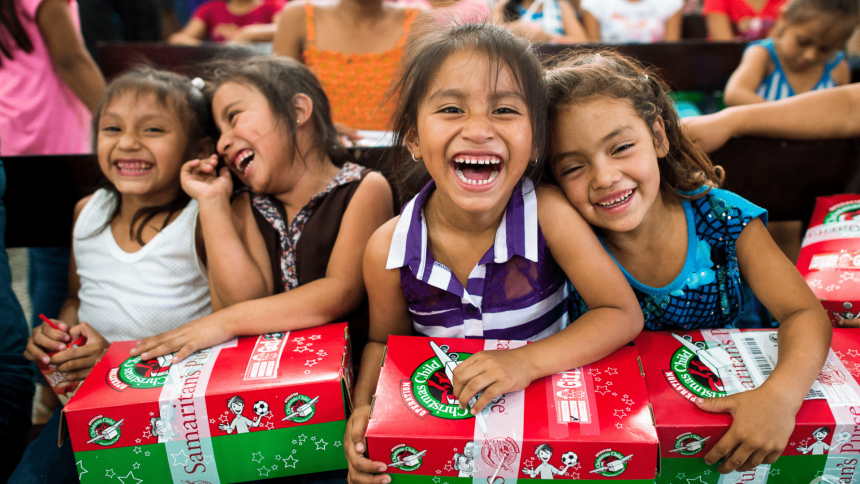

About Us
"Delivering Good News and Great Joy to Children Around the World"
Operation Christmas Child is a project of Samaritans Purse, an international relief organization. Each year, millions of shoeboxes are packed with toys, school supplies, and hygiene items by volunteers and sent to children in need around the world.
More than just a gift, each shoebox is an opportunity to share the love of Jesus Christ. Through this simple gift, children receive not only essential items but also the hope and encouragement of knowing someone cares.
Since 1993, Operation Christmas Child has delivered over 200 million shoeboxes to children in over 170 countries and territories. Volunteers, churches, and donors come together each year to make this mission possible.
Donate
There are many ways to get involved with Operation Christmas Child:
- Packing a Shoebox: Fill a shoebox with toys, school supplies, and hygiene items. Include a personal note and photo if you wish.
- Volunteer: Help at a local collection center or assist in packing and shipping shoeboxes.
- Donate: Financial contributions help cover shipping costs and provide resources for children in need.
- Pray: Pray for the children receiving the shoeboxes and for the volunteers involved in the project.
- Spread the Word: Share the mission of Operation Christmas Child with friends, family, and your community.
For more information on how to get involved, visit our official website: Samaritan's Purse - Operation Christmas Child